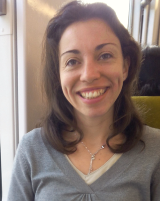

<div class="container">

    <div class="row">
        <div class="col-md-12">
            <h1 id="logo">Emilie</h1>
        </div>
        <div class="col-md-6 col-xs-6 text-center">

            
        </div>
        <div class="col-md-6 col-xs-6">
            <h2>Emilys, un nom d’association qui n’a pas été choisi au hasard.</h2>
            <p>L’association Emilys rend hommage à Emilie, une jeune technicienne de laboratoire contaminée à la suite d’un accident du travail dans un laboratoire de l’Institut National de la Recherche Agronomique (ex-INRAe) par la maladie de Creutzfeldt-Jakob.</p>
        </div>

        <div class="col-md-12">
            <p>En 2010, cette jeune technicienne tout juste sortie de l’université est recrutée en CDD dans l’unité de recherche de Virologie et Immunologie, elle est affectée à une équipe chargée des recherches sur les prions.</p>
            <p>Sous sa forme infectieuse, la protéine du prion provoque des encéphalopathies spongiformes transmissibles (EST), comme la maladie dite de la « vache folle », de la tremblante du mouton ou de la maladie de Creutzfeldt-Jakob chez l’homme, incurable
                et mortelle.</p>
            <p>Il lui est confié la mission de travailler sur des extraits de cerveaux de souris hautement infectés par des souches de prions humains.</p>
            <p>Selon la réglementation sur la prévention des risques des travailleurs exposés à des agents biologiques pathogènes, les prions sont classés parmi les plus dangereux (de niveau 3 sur une échelle croissante de 1 à 4).</p>
            <p>Emilie avait 23 ans. Son jeune âge et son manque d’expérience évident à travailler sur un agent aussi dangereux ne dérangent en rien ses responsables qui la laissent sur un travail aussi risqué et fatal en cas d’accident. </p>
            <p>Le matin du lundi 31 mai 2010 Emilie est victime d’un accident. En rangeant ses outils après avoir terminé son travail, elle s’entaille le doigt avec un outil en métal extrêmement tranchant, et pire encore, contaminé par les prions humains.
                Il s’agit d’une petite blessure mais qui a provoqué une plaie saignante et qui va donner lieu à une prise en charge de décontamination et de soins “frisant l’amateurisme”. Face à sa réelle crainte d’une éventuelle contagion, Émilie a dû
                aussi encaisser les moqueries de ses responsables qui avaient clairement pris l’accident à la légère
            </p>
            <p>L’accident de travail est, tout de même, reconnu un mois plus tard par l’institut de recherche. Pourtant, alors même que la jeune Emilie est susceptible d’être atteinte par la maladie de Creutzfeldt-Jakob, l’INRA ne procède à aucun suivi psychologique
                et médical de son employé.</p>
            <p>Une fois son contrat de travail terminé à l’INRA, Emilie poursuit sa carrière dans d’autres instituts de recherche. Depuis son départ de l’INRA, elle ne manipule plus jamais de prions.</p>
            <p>À partir de novembre 2017, progressivement, son état de santé se dégrade. En avril 2018, souffrant de façon persistante de douleurs à l’épaule, elle passe des examens radiographiques qui ne signalent rien d’anormal. En août 2018, elle ne peut
                plus marcher et sombre dans une dépression. Sa santé se dégrade inexorablement. Elle est régulièrement hospitalisée. Puis, elle perd l’usage du langage et ne parvient plus à se déplacer. </p>
            <p>C’est finalement en avril 2019, après de multiples examens que les médecins de la Cellule nationale de référence des maladies de Creutzfeldt-Jakob de l’hôpital de la Pitié-Salpêtrière diagnostiquent qu’Émilie est atteinte du variant de la
                maladie de Creutzfeldt-Jakob. </p>
            <p>Mais l’institut public, pourtant indéniablement responsable, refuse d’admettre son incrimination dans cette maladie. Malgré le fait que cette maladie soit extrêmement rare (100 cas par an en France ) et touche habituellement un public âgé,
                il persiste et nie tout lien de causalité entre ses activités de recherche et le décès de la jeune Emilie.
            </p>
            <p>Devant son désintéressement total au vue de la situation et son attitude de refus d’assumer ses responsabilités, la Justice a été saisie, une enquête est ouverte afin de faire la lumière sur les responsabilités de cette institution.</p>
            <p>Après un an et demi de souffrances et de décadence, Emilie s’est éteinte à l’âge de 33 ans le 17 juin 2019.</p>
        </div>
    </div>
</div>
<!-- <div class="container">
    <div class="row">
        <div class="col-md-12">
            <h1 id="logo">Emilie</h1>
            <div class="clearfix">
                
                <h2>Emilys, un nom d’association qui n’a pas été choisi au hasard.</h2>
                <p>L’association Emilys rend hommage à Emilie, une jeune technicienne de laboratoire contaminée à la suite d’un accident du travail dans un laboratoire de l’Institut National de la Recherche Agronomique (ex-INRAe) par la maladie de Creutzfeldt-Jakob.</p>
            </div>
          
        </div>
    </div>
</div> -->